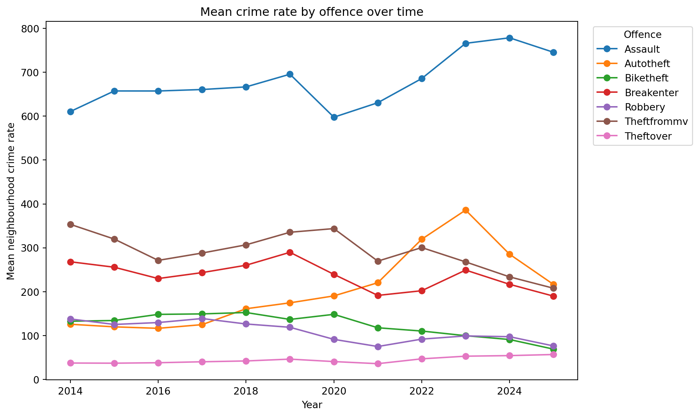
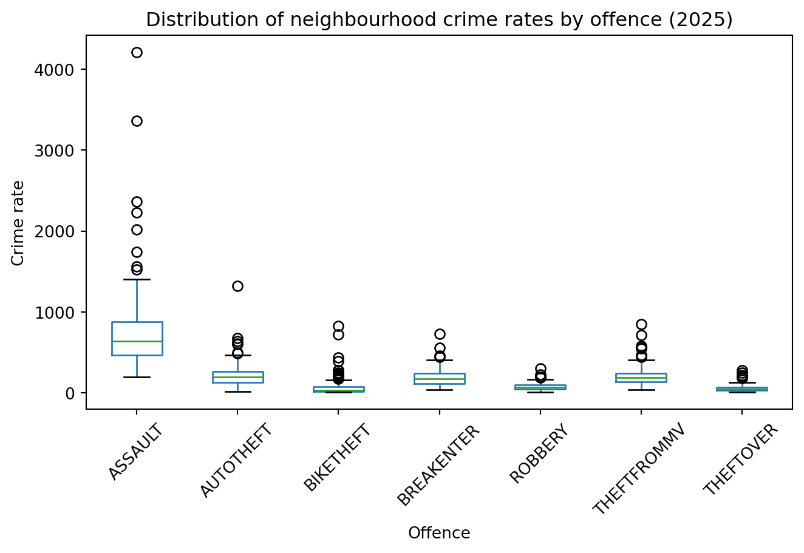
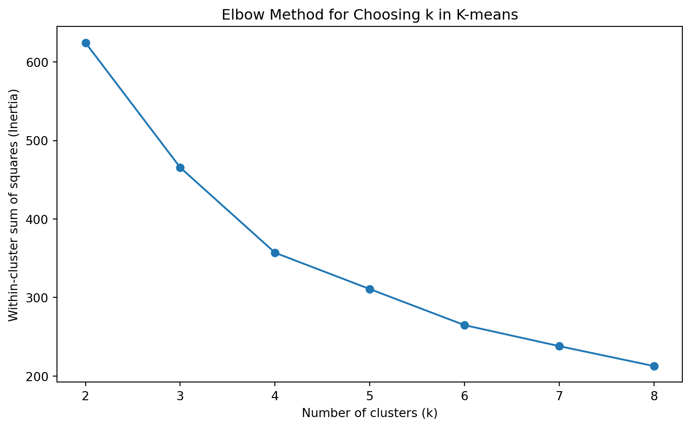

import requests
import pandas as pd
import numpy as np
import matplotlib.pyplot as plt
import seaborn as sns
import re
from itertools import combinations
from scipy.stats import spearmanr
from statsmodels.stats.multitest import multipletests
from itertools import combinations
from scipy.stats import pearsonr
from pathlib import Path
import pandas as pd
from sklearn.impute import SimpleImputer
from sklearn.preprocessing import StandardScaler
from sklearn.cluster import KMeans
from sklearn.tree import DecisionTreeRegressor
from sklearn.linear_model import LinearRegression
from sklearn.metrics import mean_squared_error, mean_absolute_error, r2_score
from sklearn.ensemble import RandomForestRegressor
from sklearn.model_selection import ParameterGrid
from xgboost import XGBRegressorEDA and Analysis Notebook
Toronto Neighbourhood Crime Analysis
Our living social enviroment is changing overtime. By analyzing the Neighbourhood Crime Rates dataset of Toronto city, we gain insights into how crime rates vary across different neighbourhoods and offence categories, and how they have changed over time. We also explore the relationships between different crime types and evaluate the predictive power of past crime patterns for future crime rates. All of this tells us us how the overall social enviroment in Toronto changes, and potentially provide some information for policy making and crime prevention.
This dataset, the Neighbourhood Crime Rates dataset, is from the City of Toronto Open Data Portal. The portal is the City’s official open data source (https://www.toronto.ca/city-government/data-research-maps/open-data/), and this dataset contains crime data by neighbourhood. In the data table, each row represents one Toronto neighbourhood, and the columns describe different neighbourhood-level crime measures.
‘This dataset includes the Crime Data by Neighbourhood. Counts are available for Assault, Auto Theft, Break and Enter, Robbery, Theft Over, Homicide and Shooting & Firearm Discharges. Data also includes the crime rate per 100,000 population calculated using the population estimates provided by Environics Analytics.’ quoted from https://open.toronto.ca/dataset/neighbourhood-crime-rates/, the dataset description page.
Notice: the analysis is intended for descriptive and predictive understanding, not for labeling neighbourhoods or residents
The Main project question: How have Toronto neighbourhood crime patterns changed from 2014 to 2025, and how well can past crime patterns predict future neighbourhood crime rates?
Supporting subquestions answered during the process:
- How much do recorded crime rates vary across Toronto neighbourhoods?
- Can neighbourhoods be grouped into meaningful crime-profile clusters?
- How well do linear models, random forests, and boosting predict next-year crime rates?
Link to the github repo: https://github.com/Jerry-Zeng-UofT/JSC370_Project
# helper function to save csv if not already exists
DATA_DIR = Path("data")
DATA_DIR.mkdir(exist_ok=True)
def save_csv_if_missing(df_obj, filename):
out_path = DATA_DIR / filename
if not out_path.exists():
df_obj.to_csv(out_path, index=False)
print(f"Saved: {out_path}")
else:
print(f"Already exists, skipped: {out_path}")base_url = "https://ckan0.cf.opendata.inter.prod-toronto.ca"
# Developer code given by dataset website
package = requests.get(
base_url + "/api/3/action/package_show",
params={"id": "neighbourhood-crime-rates"}
).json()
resource_id = None
for resource in package["result"]["resources"]:
if resource["datastore_active"]:
resource_id = resource["id"]
print("Using resource:", resource["name"])
print("Resource ID:", resource_id)
break
if resource_id is None:
raise ValueError("No datastore_active resource found.")
dump_url = f"{base_url}/datastore/dump/{resource_id}"
df = pd.read_csv(dump_url)
# print(df.head())
# print(df.shape)
print(df.columns.tolist())Using resource: neighbourhood-crime-rates
Resource ID: d4160604-9f3e-4589-8821-9fd70fa350b3
['_id', 'AREA_NAME', 'HOOD_ID', 'ASSAULT_2014', 'ASSAULT_2015', 'ASSAULT_2016', 'ASSAULT_2017', 'ASSAULT_2018', 'ASSAULT_2019', 'ASSAULT_2020', 'ASSAULT_2021', 'ASSAULT_2022', 'ASSAULT_2023', 'ASSAULT_2024', 'ASSAULT_2025', 'ASSAULT_RATE_2014', 'ASSAULT_RATE_2015', 'ASSAULT_RATE_2016', 'ASSAULT_RATE_2017', 'ASSAULT_RATE_2018', 'ASSAULT_RATE_2019', 'ASSAULT_RATE_2020', 'ASSAULT_RATE_2021', 'ASSAULT_RATE_2022', 'ASSAULT_RATE_2023', 'ASSAULT_RATE_2024', 'ASSAULT_RATE_2025', 'AUTOTHEFT_2014', 'AUTOTHEFT_2015', 'AUTOTHEFT_2016', 'AUTOTHEFT_2017', 'AUTOTHEFT_2018', 'AUTOTHEFT_2019', 'AUTOTHEFT_2020', 'AUTOTHEFT_2021', 'AUTOTHEFT_2022', 'AUTOTHEFT_2023', 'AUTOTHEFT_2024', 'AUTOTHEFT_2025', 'AUTOTHEFT_RATE_2014', 'AUTOTHEFT_RATE_2015', 'AUTOTHEFT_RATE_2016', 'AUTOTHEFT_RATE_2017', 'AUTOTHEFT_RATE_2018', 'AUTOTHEFT_RATE_2019', 'AUTOTHEFT_RATE_2020', 'AUTOTHEFT_RATE_2021', 'AUTOTHEFT_RATE_2022', 'AUTOTHEFT_RATE_2023', 'AUTOTHEFT_RATE_2024', 'AUTOTHEFT_RATE_2025', 'BIKETHEFT_2014', 'BIKETHEFT_2015', 'BIKETHEFT_2016', 'BIKETHEFT_2017', 'BIKETHEFT_2018', 'BIKETHEFT_2019', 'BIKETHEFT_2020', 'BIKETHEFT_2021', 'BIKETHEFT_2022', 'BIKETHEFT_2023', 'BIKETHEFT_2024', 'BIKETHEFT_2025', 'BIKETHEFT_RATE_2014', 'BIKETHEFT_RATE_2015', 'BIKETHEFT_RATE_2016', 'BIKETHEFT_RATE_2017', 'BIKETHEFT_RATE_2018', 'BIKETHEFT_RATE_2019', 'BIKETHEFT_RATE_2020', 'BIKETHEFT_RATE_2021', 'BIKETHEFT_RATE_2022', 'BIKETHEFT_RATE_2023', 'BIKETHEFT_RATE_2024', 'BIKETHEFT_RATE_2025', 'BREAKENTER_2014', 'BREAKENTER_2015', 'BREAKENTER_2016', 'BREAKENTER_2017', 'BREAKENTER_2018', 'BREAKENTER_2019', 'BREAKENTER_2020', 'BREAKENTER_2021', 'BREAKENTER_2022', 'BREAKENTER_2023', 'BREAKENTER_2024', 'BREAKENTER_2025', 'BREAKENTER_RATE_2014', 'BREAKENTER_RATE_2015', 'BREAKENTER_RATE_2016', 'BREAKENTER_RATE_2017', 'BREAKENTER_RATE_2018', 'BREAKENTER_RATE_2019', 'BREAKENTER_RATE_2020', 'BREAKENTER_RATE_2021', 'BREAKENTER_RATE_2022', 'BREAKENTER_RATE_2023', 'BREAKENTER_RATE_2024', 'BREAKENTER_RATE_2025', 'HOMICIDE_2014', 'HOMICIDE_2015', 'HOMICIDE_2016', 'HOMICIDE_2017', 'HOMICIDE_2018', 'HOMICIDE_2019', 'HOMICIDE_2020', 'HOMICIDE_2021', 'HOMICIDE_2022', 'HOMICIDE_2023', 'HOMICIDE_2024', 'HOMICIDE_2025', 'HOMICIDE_RATE_2014', 'HOMICIDE_RATE_2015', 'HOMICIDE_RATE_2016', 'HOMICIDE_RATE_2017', 'HOMICIDE_RATE_2018', 'HOMICIDE_RATE_2019', 'HOMICIDE_RATE_2020', 'HOMICIDE_RATE_2021', 'HOMICIDE_RATE_2022', 'HOMICIDE_RATE_2023', 'HOMICIDE_RATE_2024', 'HOMICIDE_RATE_2025', 'ROBBERY_2014', 'ROBBERY_2015', 'ROBBERY_2016', 'ROBBERY_2017', 'ROBBERY_2018', 'ROBBERY_2019', 'ROBBERY_2020', 'ROBBERY_2021', 'ROBBERY_2022', 'ROBBERY_2023', 'ROBBERY_2024', 'ROBBERY_2025', 'ROBBERY_RATE_2014', 'ROBBERY_RATE_2015', 'ROBBERY_RATE_2016', 'ROBBERY_RATE_2017', 'ROBBERY_RATE_2018', 'ROBBERY_RATE_2019', 'ROBBERY_RATE_2020', 'ROBBERY_RATE_2021', 'ROBBERY_RATE_2022', 'ROBBERY_RATE_2023', 'ROBBERY_RATE_2024', 'ROBBERY_RATE_2025', 'SHOOTING_2014', 'SHOOTING_2015', 'SHOOTING_2016', 'SHOOTING_2017', 'SHOOTING_2018', 'SHOOTING_2019', 'SHOOTING_2020', 'SHOOTING_2021', 'SHOOTING_2022', 'SHOOTING_2023', 'SHOOTING_2024', 'SHOOTING_2025', 'SHOOTING_RATE_2014', 'SHOOTING_RATE_2015', 'SHOOTING_RATE_2016', 'SHOOTING_RATE_2017', 'SHOOTING_RATE_2018', 'SHOOTING_RATE_2019', 'SHOOTING_RATE_2020', 'SHOOTING_RATE_2021', 'SHOOTING_RATE_2022', 'SHOOTING_RATE_2023', 'SHOOTING_RATE_2024', 'SHOOTING_RATE_2025', 'THEFTFROMMV_2014', 'THEFTFROMMV_2015', 'THEFTFROMMV_2016', 'THEFTFROMMV_2017', 'THEFTFROMMV_2018', 'THEFTFROMMV_2019', 'THEFTFROMMV_2020', 'THEFTFROMMV_2021', 'THEFTFROMMV_2022', 'THEFTFROMMV_2023', 'THEFTFROMMV_2024', 'THEFTFROMMV_2025', 'THEFTFROMMV_RATE_2014', 'THEFTFROMMV_RATE_2015', 'THEFTFROMMV_RATE_2016', 'THEFTFROMMV_RATE_2017', 'THEFTFROMMV_RATE_2018', 'THEFTFROMMV_RATE_2019', 'THEFTFROMMV_RATE_2020', 'THEFTFROMMV_RATE_2021', 'THEFTFROMMV_RATE_2022', 'THEFTFROMMV_RATE_2023', 'THEFTFROMMV_RATE_2024', 'THEFTFROMMV_RATE_2025', 'THEFTOVER_2014', 'THEFTOVER_2015', 'THEFTOVER_2016', 'THEFTOVER_2017', 'THEFTOVER_2018', 'THEFTOVER_2019', 'THEFTOVER_2020', 'THEFTOVER_2021', 'THEFTOVER_2022', 'THEFTOVER_2023', 'THEFTOVER_2024', 'THEFTOVER_2025', 'THEFTOVER_RATE_2014', 'THEFTOVER_RATE_2015', 'THEFTOVER_RATE_2016', 'THEFTOVER_RATE_2017', 'THEFTOVER_RATE_2018', 'THEFTOVER_RATE_2019', 'THEFTOVER_RATE_2020', 'THEFTOVER_RATE_2021', 'THEFTOVER_RATE_2022', 'THEFTOVER_RATE_2023', 'THEFTOVER_RATE_2024', 'THEFTOVER_RATE_2025', 'POPULATION_2025', 'geometry']- The dataset doesnt contain a metadata file for detailed data description. However, the column names are mostly self-explanatory.
# Basic inspection
print("Shape:", df.shape)
print("\nData types:")
print(df.dtypes)Shape: (158, 221)
Data types:
_id int64
AREA_NAME object
HOOD_ID int64
ASSAULT_2014 int64
ASSAULT_2015 int64
...
THEFTOVER_RATE_2023 float64
THEFTOVER_RATE_2024 float64
THEFTOVER_RATE_2025 float64
POPULATION_2025 int64
geometry object
Length: 221, dtype: object- The dataset has 158 rows and 221 columns. Each row represents a neighbourhood, and the columns include the neighbourhood name, population counts for different years, and crime counts and rates for different offence categories and years.
print("\nMissing values in each column: (omitted for clean report)")
missing = df.isna().sum()
missing = missing[missing > 0]
print(missing.to_string())
Missing values in each column: (omitted for clean report)
AUTOTHEFT_2017 1
AUTOTHEFT_RATE_2017 1
BIKETHEFT_2014 6
BIKETHEFT_2015 1
BIKETHEFT_2016 3
BIKETHEFT_2017 6
BIKETHEFT_2018 7
BIKETHEFT_2019 6
BIKETHEFT_2020 9
BIKETHEFT_2021 10
BIKETHEFT_2022 10
BIKETHEFT_2023 4
BIKETHEFT_2024 9
BIKETHEFT_2025 11
BIKETHEFT_RATE_2014 6
BIKETHEFT_RATE_2015 1
BIKETHEFT_RATE_2016 3
BIKETHEFT_RATE_2017 6
BIKETHEFT_RATE_2018 7
BIKETHEFT_RATE_2019 6
BIKETHEFT_RATE_2020 9
BIKETHEFT_RATE_2021 10
BIKETHEFT_RATE_2022 10
BIKETHEFT_RATE_2023 4
BIKETHEFT_RATE_2024 9
BIKETHEFT_RATE_2025 11
HOMICIDE_2014 113
HOMICIDE_2015 116
HOMICIDE_2016 111
HOMICIDE_2017 115
HOMICIDE_2018 100
HOMICIDE_2019 100
HOMICIDE_2020 106
HOMICIDE_2021 104
HOMICIDE_2022 106
HOMICIDE_2023 110
HOMICIDE_2024 102
HOMICIDE_2025 121
HOMICIDE_RATE_2014 113
HOMICIDE_RATE_2015 116
HOMICIDE_RATE_2016 111
HOMICIDE_RATE_2017 115
HOMICIDE_RATE_2018 100
HOMICIDE_RATE_2019 100
HOMICIDE_RATE_2020 106
HOMICIDE_RATE_2021 104
HOMICIDE_RATE_2022 106
HOMICIDE_RATE_2023 110
HOMICIDE_RATE_2024 102
HOMICIDE_RATE_2025 121
ROBBERY_2014 1
ROBBERY_2016 1
ROBBERY_2018 1
ROBBERY_2021 1
ROBBERY_2022 2
ROBBERY_2023 1
ROBBERY_RATE_2014 1
ROBBERY_RATE_2016 1
ROBBERY_RATE_2018 1
ROBBERY_RATE_2021 1
ROBBERY_RATE_2022 2
ROBBERY_RATE_2023 1
SHOOTING_2014 78
SHOOTING_2015 63
SHOOTING_2016 49
SHOOTING_2017 53
SHOOTING_2018 42
SHOOTING_2019 37
SHOOTING_2020 42
SHOOTING_2021 45
SHOOTING_2022 36
SHOOTING_2023 44
SHOOTING_2024 34
SHOOTING_2025 54
SHOOTING_RATE_2014 78
SHOOTING_RATE_2015 63
SHOOTING_RATE_2016 49
SHOOTING_RATE_2017 53
SHOOTING_RATE_2018 42
SHOOTING_RATE_2019 37
SHOOTING_RATE_2020 42
SHOOTING_RATE_2021 45
SHOOTING_RATE_2022 36
SHOOTING_RATE_2023 44
SHOOTING_RATE_2024 34
SHOOTING_RATE_2025 54
THEFTOVER_2014 5
THEFTOVER_2016 9
THEFTOVER_2017 4
THEFTOVER_2018 4
THEFTOVER_2019 2
THEFTOVER_2020 1
THEFTOVER_2021 9
THEFTOVER_2022 3
THEFTOVER_2023 2
THEFTOVER_RATE_2014 5
THEFTOVER_RATE_2016 9
THEFTOVER_RATE_2017 4
THEFTOVER_RATE_2018 4
THEFTOVER_RATE_2019 2
THEFTOVER_RATE_2020 1
THEFTOVER_RATE_2021 9
THEFTOVER_RATE_2022 3
THEFTOVER_RATE_2023 2There are alot of missing values in the dataset. There are only 158 neighbourhoods, but some crimes have more than 100 missing values, such as homicide in almost every year. This amount of missing values can lead to misleading conclusions, and potentially makes the further analysis biased, so I will exclude offence categories with too many missing values from the main analysis.
That said, a single cut off might not be appropriate, because the dataset has another dimension – time, and the number of missing values could be different across years. Hence, I will evaluate the missing values for each crime type based on average missingness across years and the worst year missingness. Then I will set a threshold based on the distribution of missing values across crime types.
pattern = re.compile(r"^(.*?)(_RATE)?_(\d{4})$")
records = []
for col in df.columns:
match = pattern.match(col)
if match:
offence = match.group(1) # e.g. ASSAULT, HOMICIDE, BIKETHEFT
is_rate = match.group(2) is not None
year = int(match.group(3))
missing_count = df[col].isna().sum()
missing_rate = missing_count / len(df)
records.append({
"column": col,
"offence": offence,
"type": "rate" if is_rate else "count",
"year": year,
"missing_count": missing_count,
"missing_rate": missing_rate
})
missing_by_col = pd.DataFrame(records)
summary = (
missing_by_col
.groupby(["offence", "type"])
.agg(
n_years=("year", "count"),
avg_missing_count=("missing_count", "mean"),
worst_missing_count=("missing_count", "max"),
avg_missing_rate=("missing_rate", "mean"),
worst_missing_rate=("missing_rate", "max")
)
.reset_index()
)
# Find the year with the worst missingness for each offence + type
worst_year_info = (
missing_by_col.loc[
missing_by_col.groupby(["offence", "type"])["missing_count"].idxmax(),
["offence", "type", "year"]
]
.rename(columns={"year": "worst_year"})
)
summary = summary.merge(worst_year_info, on=["offence", "type"], how="left")
summary["avg_missing_pct"] = summary["avg_missing_rate"] * 100
summary["worst_missing_pct"] = summary["worst_missing_rate"] * 100
summary = summary.sort_values(
by=["worst_missing_rate", "avg_missing_rate"],
ascending=False
)
report_table = summary[[
"offence", "type", "n_years",
"avg_missing_count", "worst_missing_count", "worst_year",
"avg_missing_pct", "worst_missing_pct"
]].copy()
# Rename columns for presentation
report_table = report_table.rename(columns={
"offence": "Offence",
"type": "Measure Type",
"n_years": "Years Available",
"avg_missing_count": "Average Missing Count",
"worst_missing_count": "Worst-Year Missing Count",
"worst_year": "Worst Year",
"avg_missing_pct": "Average Missing Rate (%)",
"worst_missing_pct": "Worst-Year Missing Rate (%)"
})
report_table["Offence"] = report_table["Offence"].str.title()
report_table["Measure Type"] = report_table["Measure Type"].str.title()
report_table["Average Missing Count"] = report_table["Average Missing Count"].round(2)
report_table["Average Missing Rate (%)"] = report_table["Average Missing Rate (%)"].round(2)
report_table["Worst-Year Missing Rate (%)"] = report_table["Worst-Year Missing Rate (%)"].round(2)
report_table = report_table.sort_values(
by=["Worst-Year Missing Rate (%)", "Average Missing Rate (%)"],
ascending=False
).reset_index(drop=True)
# Show the table
report_table| Offence | Measure Type | Years Available | Average Missing Count | Worst-Year Missing Count | Worst Year | Average Missing Rate (%) | Worst-Year Missing Rate (%) | |
|---|---|---|---|---|---|---|---|---|
| 0 | Homicide | Count | 12 | 108.67 | 121 | 2025 | 68.78 | 76.58 |
| 1 | Homicide | Rate | 12 | 108.67 | 121 | 2025 | 68.78 | 76.58 |
| 2 | Shooting | Count | 12 | 48.08 | 78 | 2014 | 30.43 | 49.37 |
| 3 | Shooting | Rate | 12 | 48.08 | 78 | 2014 | 30.43 | 49.37 |
| 4 | Biketheft | Count | 12 | 6.83 | 11 | 2025 | 4.32 | 6.96 |
| 5 | Biketheft | Rate | 12 | 6.83 | 11 | 2025 | 4.32 | 6.96 |
| 6 | Theftover | Count | 12 | 3.25 | 9 | 2016 | 2.06 | 5.70 |
| 7 | Theftover | Rate | 12 | 3.25 | 9 | 2016 | 2.06 | 5.70 |
| 8 | Robbery | Count | 12 | 0.58 | 2 | 2022 | 0.37 | 1.27 |
| 9 | Robbery | Rate | 12 | 0.58 | 2 | 2022 | 0.37 | 1.27 |
| 10 | Autotheft | Count | 12 | 0.08 | 1 | 2017 | 0.05 | 0.63 |
| 11 | Autotheft | Rate | 12 | 0.08 | 1 | 2017 | 0.05 | 0.63 |
| 12 | Assault | Count | 12 | 0.00 | 0 | 2014 | 0.00 | 0.00 |
| 13 | Assault | Rate | 12 | 0.00 | 0 | 2014 | 0.00 | 0.00 |
| 14 | Breakenter | Count | 12 | 0.00 | 0 | 2014 | 0.00 | 0.00 |
| 15 | Breakenter | Rate | 12 | 0.00 | 0 | 2014 | 0.00 | 0.00 |
| 16 | Population | Count | 1 | 0.00 | 0 | 2025 | 0.00 | 0.00 |
| 17 | Theftfrommv | Count | 12 | 0.00 | 0 | 2014 | 0.00 | 0.00 |
| 18 | Theftfrommv | Rate | 12 | 0.00 | 0 | 2014 | 0.00 | 0.00 |
Homicide has extremely high missing rate across all years, with an average missing rate of about 69% and a worst-year missing rate of about 77%. That is too incomplete, so it will be excluded from the main analysis.
Shooting also has high missing rate, with an average of about 30% and a worst-year missing rate of about 49%. Although not as bad as homicide, it is still quite high and may lead to biased conclusions, so it will not be included in the main analysis either.
For the remaining offences, missing rate is low. Biketheft has the highest missing rate among remaining offences, but its average missing rate is only about 4.3% and its worst-year missing rate is about 7.0%, which is still relatively small in this dataset. Hence, all of the remaining offences will be included in the main analysis.
That said, even with low missing rate, these offences with missing values may still have influence on the analysis. Since the dataset has only 158 rows, directly dropping rows with missing values may lead to significant loss of information. Hence, I will handle the missing values based on anaylsis type. For descriptive analysis, I will omit the missing neighbourhood so I do not ‘make up’ data. For predictive analysis, I will impute the missing values so the dataset can be used for model training.
# Drop all HOMICIDE and SHOOTING columns
# Identify columns to remove
cols_to_drop = [col for col in df.columns if col.startswith(("HOMICIDE", "SHOOTING"))]
# Drop them
df = df.drop(columns=cols_to_drop).copy()# Data wrangling - clean column names
df.columns = df.columns.str.strip().str.lower().str.replace(" ", "_")
print(df.columns.tolist())['_id', 'area_name', 'hood_id', 'assault_2014', 'assault_2015', 'assault_2016', 'assault_2017', 'assault_2018', 'assault_2019', 'assault_2020', 'assault_2021', 'assault_2022', 'assault_2023', 'assault_2024', 'assault_2025', 'assault_rate_2014', 'assault_rate_2015', 'assault_rate_2016', 'assault_rate_2017', 'assault_rate_2018', 'assault_rate_2019', 'assault_rate_2020', 'assault_rate_2021', 'assault_rate_2022', 'assault_rate_2023', 'assault_rate_2024', 'assault_rate_2025', 'autotheft_2014', 'autotheft_2015', 'autotheft_2016', 'autotheft_2017', 'autotheft_2018', 'autotheft_2019', 'autotheft_2020', 'autotheft_2021', 'autotheft_2022', 'autotheft_2023', 'autotheft_2024', 'autotheft_2025', 'autotheft_rate_2014', 'autotheft_rate_2015', 'autotheft_rate_2016', 'autotheft_rate_2017', 'autotheft_rate_2018', 'autotheft_rate_2019', 'autotheft_rate_2020', 'autotheft_rate_2021', 'autotheft_rate_2022', 'autotheft_rate_2023', 'autotheft_rate_2024', 'autotheft_rate_2025', 'biketheft_2014', 'biketheft_2015', 'biketheft_2016', 'biketheft_2017', 'biketheft_2018', 'biketheft_2019', 'biketheft_2020', 'biketheft_2021', 'biketheft_2022', 'biketheft_2023', 'biketheft_2024', 'biketheft_2025', 'biketheft_rate_2014', 'biketheft_rate_2015', 'biketheft_rate_2016', 'biketheft_rate_2017', 'biketheft_rate_2018', 'biketheft_rate_2019', 'biketheft_rate_2020', 'biketheft_rate_2021', 'biketheft_rate_2022', 'biketheft_rate_2023', 'biketheft_rate_2024', 'biketheft_rate_2025', 'breakenter_2014', 'breakenter_2015', 'breakenter_2016', 'breakenter_2017', 'breakenter_2018', 'breakenter_2019', 'breakenter_2020', 'breakenter_2021', 'breakenter_2022', 'breakenter_2023', 'breakenter_2024', 'breakenter_2025', 'breakenter_rate_2014', 'breakenter_rate_2015', 'breakenter_rate_2016', 'breakenter_rate_2017', 'breakenter_rate_2018', 'breakenter_rate_2019', 'breakenter_rate_2020', 'breakenter_rate_2021', 'breakenter_rate_2022', 'breakenter_rate_2023', 'breakenter_rate_2024', 'breakenter_rate_2025', 'robbery_2014', 'robbery_2015', 'robbery_2016', 'robbery_2017', 'robbery_2018', 'robbery_2019', 'robbery_2020', 'robbery_2021', 'robbery_2022', 'robbery_2023', 'robbery_2024', 'robbery_2025', 'robbery_rate_2014', 'robbery_rate_2015', 'robbery_rate_2016', 'robbery_rate_2017', 'robbery_rate_2018', 'robbery_rate_2019', 'robbery_rate_2020', 'robbery_rate_2021', 'robbery_rate_2022', 'robbery_rate_2023', 'robbery_rate_2024', 'robbery_rate_2025', 'theftfrommv_2014', 'theftfrommv_2015', 'theftfrommv_2016', 'theftfrommv_2017', 'theftfrommv_2018', 'theftfrommv_2019', 'theftfrommv_2020', 'theftfrommv_2021', 'theftfrommv_2022', 'theftfrommv_2023', 'theftfrommv_2024', 'theftfrommv_2025', 'theftfrommv_rate_2014', 'theftfrommv_rate_2015', 'theftfrommv_rate_2016', 'theftfrommv_rate_2017', 'theftfrommv_rate_2018', 'theftfrommv_rate_2019', 'theftfrommv_rate_2020', 'theftfrommv_rate_2021', 'theftfrommv_rate_2022', 'theftfrommv_rate_2023', 'theftfrommv_rate_2024', 'theftfrommv_rate_2025', 'theftover_2014', 'theftover_2015', 'theftover_2016', 'theftover_2017', 'theftover_2018', 'theftover_2019', 'theftover_2020', 'theftover_2021', 'theftover_2022', 'theftover_2023', 'theftover_2024', 'theftover_2025', 'theftover_rate_2014', 'theftover_rate_2015', 'theftover_rate_2016', 'theftover_rate_2017', 'theftover_rate_2018', 'theftover_rate_2019', 'theftover_rate_2020', 'theftover_rate_2021', 'theftover_rate_2022', 'theftover_rate_2023', 'theftover_rate_2024', 'theftover_rate_2025', 'population_2025', 'geometry']# Data cleaning - check for negative values in numeric columns
numeric_cols = df.select_dtypes(include="number").columns
for col in numeric_cols:
if (df[col] < 0).any():
print(f"{col} has negative values")- One of the impossible value is any negative value in the crime counts or crime rates. Nothing is printed, so there isnt any.
# Keep identifier columns and rate columns only
id_cols = ["_id", "area_name", "hood_id", "population_2025", "geometry"]
# Keep only the ID columns that actually exist in df
id_cols = [col for col in id_cols if col in df.columns]
rate_cols = [col for col in df.columns if "_rate_" in col]
df_rate = df[id_cols + rate_cols].copy()
print(df_rate.shape)
print(df_rate.columns.tolist())(158, 89)
['_id', 'area_name', 'hood_id', 'population_2025', 'geometry', 'assault_rate_2014', 'assault_rate_2015', 'assault_rate_2016', 'assault_rate_2017', 'assault_rate_2018', 'assault_rate_2019', 'assault_rate_2020', 'assault_rate_2021', 'assault_rate_2022', 'assault_rate_2023', 'assault_rate_2024', 'assault_rate_2025', 'autotheft_rate_2014', 'autotheft_rate_2015', 'autotheft_rate_2016', 'autotheft_rate_2017', 'autotheft_rate_2018', 'autotheft_rate_2019', 'autotheft_rate_2020', 'autotheft_rate_2021', 'autotheft_rate_2022', 'autotheft_rate_2023', 'autotheft_rate_2024', 'autotheft_rate_2025', 'biketheft_rate_2014', 'biketheft_rate_2015', 'biketheft_rate_2016', 'biketheft_rate_2017', 'biketheft_rate_2018', 'biketheft_rate_2019', 'biketheft_rate_2020', 'biketheft_rate_2021', 'biketheft_rate_2022', 'biketheft_rate_2023', 'biketheft_rate_2024', 'biketheft_rate_2025', 'breakenter_rate_2014', 'breakenter_rate_2015', 'breakenter_rate_2016', 'breakenter_rate_2017', 'breakenter_rate_2018', 'breakenter_rate_2019', 'breakenter_rate_2020', 'breakenter_rate_2021', 'breakenter_rate_2022', 'breakenter_rate_2023', 'breakenter_rate_2024', 'breakenter_rate_2025', 'robbery_rate_2014', 'robbery_rate_2015', 'robbery_rate_2016', 'robbery_rate_2017', 'robbery_rate_2018', 'robbery_rate_2019', 'robbery_rate_2020', 'robbery_rate_2021', 'robbery_rate_2022', 'robbery_rate_2023', 'robbery_rate_2024', 'robbery_rate_2025', 'theftfrommv_rate_2014', 'theftfrommv_rate_2015', 'theftfrommv_rate_2016', 'theftfrommv_rate_2017', 'theftfrommv_rate_2018', 'theftfrommv_rate_2019', 'theftfrommv_rate_2020', 'theftfrommv_rate_2021', 'theftfrommv_rate_2022', 'theftfrommv_rate_2023', 'theftfrommv_rate_2024', 'theftfrommv_rate_2025', 'theftover_rate_2014', 'theftover_rate_2015', 'theftover_rate_2016', 'theftover_rate_2017', 'theftover_rate_2018', 'theftover_rate_2019', 'theftover_rate_2020', 'theftover_rate_2021', 'theftover_rate_2022', 'theftover_rate_2023', 'theftover_rate_2024', 'theftover_rate_2025']df_long = df_rate.melt(
id_vars=id_cols,
value_vars=rate_cols,
var_name="offence_year",
value_name="rate"
)
# Split offence_year into offence and year
df_long[["offence", "year"]] = df_long["offence_year"].str.rsplit("_rate_", n=1, expand=True)
# Clean up types
df_long["year"] = df_long["year"].astype(int)
df_long["offence"] = df_long["offence"].str.upper()
base_cols = [col for col in ["_id", "area_name", "hood_id", "population_2025", "geometry"] if col in df_long.columns]
df_long = df_long[base_cols + ["offence", "year", "rate"]]
print(df_long.shape)
df_long.head()(13272, 8)| _id | area_name | hood_id | population_2025 | geometry | offence | year | rate | |
|---|---|---|---|---|---|---|---|---|
| 0 | 1 | South Eglinton-Davisville | 174 | 28902 | {"type": "Polygon", "coordinates": [[[-79.3863... | ASSAULT | 2014 | 301.171844 |
| 1 | 2 | North Toronto | 173 | 20582 | {"type": "Polygon", "coordinates": [[[-79.3974... | ASSAULT | 2014 | 455.757172 |
| 2 | 3 | Dovercourt Village | 172 | 13129 | {"type": "Polygon", "coordinates": [[[-79.4341... | ASSAULT | 2014 | 456.150665 |
| 3 | 4 | Junction-Wallace Emerson | 171 | 27777 | {"type": "Polygon", "coordinates": [[[-79.4387... | ASSAULT | 2014 | 698.258606 |
| 4 | 5 | Yonge-Bay Corridor | 170 | 16661 | {"type": "Polygon", "coordinates": [[[-79.3840... | ASSAULT | 2014 | 3750.000000 |
save_csv_if_missing(df, "cleaned_crime.csv")
# df_long is too large for the repo, it will not be included in the data folder. When any visualization needs it, the code of generating it will be copied there.
# save_csv_if_missing(df_long, "df_long.csv")Already exists, skipped: data/cleaned_crime.csv- The dataset is now in a long format, which is more suitable for analysis and visualization. Each row represents the crime rate for a specific offence in a specific year for a specific neighbourhood.
# Summary table: mean and median rate by offence and year
summary_stats_table = (
df_long
.groupby(["offence", "year"], as_index=False)
.agg(
mean_rate=("rate", "mean"),
median_rate=("rate", "median")
)
)
summary_stats_table["mean_rate"] = summary_stats_table["mean_rate"].round(2)
summary_stats_table["median_rate"] = summary_stats_table["median_rate"].round(2)
summary_stats_table = summary_stats_table.sort_values(["offence", "year"]).reset_index(drop=True)
summary_stats_wide = (
summary_stats_table
.pivot(index="year", columns="offence", values=["mean_rate", "median_rate"])
)
summary_stats_wide = summary_stats_wide.round(2)
summary_stats_wide| mean_rate | median_rate | |||||||||||||
|---|---|---|---|---|---|---|---|---|---|---|---|---|---|---|
| offence | ASSAULT | AUTOTHEFT | BIKETHEFT | BREAKENTER | ROBBERY | THEFTFROMMV | THEFTOVER | ASSAULT | AUTOTHEFT | BIKETHEFT | BREAKENTER | ROBBERY | THEFTFROMMV | THEFTOVER |
| year | ||||||||||||||
| 2014 | 610.45 | 125.78 | 132.68 | 268.16 | 137.85 | 353.40 | 37.41 | 514.10 | 100.85 | 49.44 | 231.55 | 116.66 | 275.35 | 26.79 |
| 2015 | 657.35 | 119.86 | 134.33 | 255.72 | 125.32 | 319.87 | 37.06 | 539.42 | 100.66 | 57.90 | 224.26 | 105.73 | 247.53 | 26.76 |
| 2016 | 657.29 | 116.49 | 148.27 | 229.90 | 129.64 | 271.30 | 38.11 | 564.44 | 95.49 | 61.02 | 209.60 | 100.53 | 206.82 | 28.34 |
| 2017 | 660.62 | 124.88 | 149.36 | 243.43 | 138.81 | 288.04 | 40.29 | 523.02 | 104.54 | 53.49 | 210.40 | 111.17 | 229.35 | 30.46 |
| 2018 | 666.58 | 161.10 | 152.53 | 260.23 | 126.40 | 306.73 | 42.15 | 566.12 | 136.06 | 51.69 | 223.18 | 98.01 | 247.96 | 30.48 |
| 2019 | 695.52 | 174.60 | 136.77 | 289.70 | 118.86 | 335.39 | 46.31 | 584.80 | 140.78 | 50.49 | 240.79 | 104.41 | 281.98 | 36.39 |
| 2020 | 597.54 | 190.38 | 148.37 | 239.45 | 91.37 | 343.76 | 40.73 | 517.88 | 159.16 | 68.94 | 192.66 | 76.82 | 315.83 | 34.01 |
| 2021 | 630.53 | 220.39 | 117.76 | 191.50 | 75.05 | 269.57 | 35.95 | 548.63 | 179.89 | 60.21 | 148.80 | 61.24 | 230.12 | 26.49 |
| 2022 | 685.60 | 319.48 | 110.32 | 202.15 | 91.90 | 300.51 | 46.99 | 623.52 | 256.26 | 51.64 | 179.32 | 77.00 | 267.70 | 38.38 |
| 2023 | 765.88 | 385.88 | 99.71 | 249.20 | 99.16 | 267.82 | 53.01 | 654.80 | 305.83 | 50.26 | 212.36 | 80.30 | 241.57 | 40.67 |
| 2024 | 778.45 | 285.41 | 90.98 | 216.79 | 97.44 | 233.76 | 54.34 | 653.80 | 259.46 | 45.53 | 192.02 | 82.56 | 203.20 | 44.54 |
| 2025 | 745.50 | 216.51 | 69.11 | 189.86 | 76.40 | 207.86 | 56.83 | 636.31 | 192.60 | 32.03 | 172.80 | 69.46 | 188.08 | 46.13 |
plt.figure(figsize=(10, 6))
for offence in summary_stats_table["offence"].unique():
subset = summary_stats_table[summary_stats_table["offence"] == offence]
plt.plot(subset["year"], subset["mean_rate"], marker="o", label=offence.title())
plt.xlabel("Year")
plt.ylabel("Mean neighbourhood crime rate")
plt.title("Mean crime rate by offence over time")
plt.legend(title="Offence", bbox_to_anchor=(1.02, 1), loc="upper left")
plt.tight_layout()
plt.show()
# Choose one recent year for distribution comparison
plot_year = 2025
df_dist = df_long[df_long["year"] == plot_year].copy()
plt.figure(figsize=(10, 6))
df_dist.boxplot(column="rate", by="offence", grid=False)
plt.xlabel("Offence")
plt.ylabel("Crime rate")
plt.title(f"Distribution of neighbourhood crime rates by offence ({plot_year})")
plt.suptitle("")
plt.xticks(rotation=45)
plt.tight_layout()
plt.show()<Figure size 960x576 with 0 Axes>
# Build neighbourhood-level features for clustering
# Use mean crime rate across 2014–2025 for each offence
cluster_features = (
df_long
.groupby(["hood_id", "area_name", "offence"], as_index=False)["rate"]
.mean()
.pivot(index=["hood_id", "area_name"], columns="offence", values="rate")
.reset_index()
)
feature_cols = [col for col in cluster_features.columns if col not in ["hood_id", "area_name"]]
X = cluster_features[feature_cols].copy()
# Impute small remaining missing values with median
imputer = SimpleImputer(strategy="median")
X_imputed = imputer.fit_transform(X)
# Standardize so one offence does not dominate by scale
scaler = StandardScaler()
X_scaled = scaler.fit_transform(X_imputed)
# Fit K-means
k = 4
kmeans = KMeans(n_clusters=k, random_state=42, n_init=50)
cluster_features["cluster"] = kmeans.fit_predict(X_scaled)
# Count neighbourhoods in each cluster
cluster_counts = (
cluster_features["cluster"]
.value_counts()
.sort_index()
.rename_axis("cluster")
.reset_index(name="n_neighbourhoods")
)
print("Cluster counts:")
print(cluster_counts)Cluster counts:
cluster n_neighbourhoods
0 0 112
1 1 5
2 2 5
3 3 36cluster_assignments = cluster_features[["hood_id", "area_name", "cluster"]].copy()
save_csv_if_missing(cluster_assignments, "cluster_assignments.csv")
# Profile each cluster using ORIGINAL SCALE means
cluster_profiles = (
cluster_features
.groupby("cluster")[feature_cols]
.mean()
.round(1)
)
print("\nCluster profiles (mean crime rates on original scale):")
print(cluster_profiles)
for c in sorted(cluster_features["cluster"].unique()):
print(f"\nCluster {c} neighbourhoods:")
print(cluster_features.loc[cluster_features["cluster"] == c, "area_name"].tolist())Already exists, skipped: data/cluster_assignments.csv
Cluster profiles (mean crime rates on original scale):
offence ASSAULT AUTOTHEFT BIKETHEFT BREAKENTER ROBBERY THEFTFROMMV \
cluster
0 490.7 193.1 57.7 186.9 80.7 233.0
1 936.8 759.2 60.3 379.4 196.6 620.4
2 2533.7 168.8 921.0 702.2 412.7 936.5
3 972.6 163.2 211.1 305.6 141.7 338.3
offence THEFTOVER
cluster
0 31.9
1 161.5
2 155.1
3 49.1
Cluster 0 neighbourhoods:
['Mount Olive-Silverstone-Jamestown', 'Thistletown-Beaumond Heights', 'Rexdale-Kipling', 'Elms-Old Rexdale', 'Kingsview Village-The Westway', 'Willowridge-Martingrove-Richview', 'Humber Heights-Westmount', 'Edenbridge-Humber Valley', 'Princess-Rosethorn', 'Eringate-Centennial-West Deane', 'Markland Wood', 'Etobicoke West Mall', 'Kingsway South', 'Stonegate-Queensway', 'Long Branch', 'Alderwood', 'Humbermede', 'Pelmo Park-Humberlea', 'Black Creek', 'Glenfield-Jane Heights', 'Rustic', 'Maple Leaf', 'Brookhaven-Amesbury', 'Englemount-Lawrence', 'Clanton Park', 'Bathurst Manor', 'Westminster-Branson', 'Newtonbrook West', 'Willowdale West', 'Lansing-Westgate', 'Bedford Park-Nortown', 'St.Andrew-Windfields', 'Bridle Path-Sunnybrook-York Mills', 'Banbury-Don Mills', 'Victoria Village', 'Flemingdon Park', 'Pleasant View', 'Don Valley Village', 'Hillcrest Village', 'Bayview Woods-Steeles', 'Newtonbrook East', 'Bayview Village', 'Henry Farm', "O'Connor-Parkview", 'Thorncliffe Park', 'Leaside-Bennington', 'Broadview North', 'Old East York', 'Danforth East York', 'Woodbine-Lumsden', 'Taylor-Massey', 'The Beaches', 'Woodbine Corridor', 'Little Portugal', 'High Park-Swansea', 'High Park North', 'Runnymede-Bloor West Village', 'Weston-Pelham Park', 'Corso Italia-Davenport', 'Wychwood', 'Casa Loma', 'Yonge-St.Clair', 'Mount Pleasant East', 'Yonge-Eglinton', 'Forest Hill South', 'Forest Hill North', 'Lawrence Park South', 'Lawrence Park North', 'Humewood-Cedarvale', 'Oakwood Village', 'Briar Hill-Belgravia', 'Caledonia-Fairbank', 'Keelesdale-Eglinton West', 'Rockcliffe-Smythe', 'Lambton Baby Point', 'Mount Dennis', 'Steeles', "Tam O'Shanter-Sullivan", 'Birchcliffe-Cliffside', 'Cliffcrest', 'Ionview', 'Dorset Park', 'Agincourt South-Malvern West', 'Agincourt North', 'Milliken', 'Centennial Scarborough', 'Highland Creek', 'Morningside', 'Eglinton East', 'Scarborough Village', 'Guildwood', 'Golfdale-Cedarbrae-Woburn', 'Woburn North', 'West Rouge', 'Morningside Heights', 'Malvern West', 'Malvern East', "L'Amoreaux West", "East L'Amoreaux", "Parkwoods-O'Connor Hills", 'Fenside-Parkwoods', 'Yonge-Doris', 'East Willowdale', 'Avondale', 'Downsview', 'Bendale South', 'Islington', 'Humber Bay Shores', 'Fort York-Liberty Village', 'Harbourfront-CityPlace', 'North Toronto', 'South Eglinton-Davisville']
Cluster 1 neighbourhoods:
['West Humber-Clairville', 'Humber Summit', 'York University Heights', 'Yorkdale-Glen Park', 'Etobicoke City Centre']
Cluster 2 neighbourhoods:
['Moss Park', 'Kensington-Chinatown', 'University', 'Downtown Yonge East', 'Yonge-Bay Corridor']
Cluster 3 neighbourhoods:
['New Toronto', 'East End-Danforth', 'Greenwood-Coxwell', 'Danforth', 'Playter Estates-Danforth', 'North Riverdale', 'Blake-Jones', 'South Riverdale', 'Cabbagetown-South St.James Town', 'Regent Park', 'North St.James Town', 'Palmerston-Little Italy', 'Trinity-Bellwoods', 'Dufferin Grove', 'South Parkdale', 'Roncesvalles', 'Junction Area', 'Annex', 'Rosedale-Moore Park', 'Beechborough-Greenbrook', 'Weston', 'Wexford/Maryvale', 'Clairlea-Birchmount', 'Oakridge', 'Kennedy Park', 'West Hill', 'Oakdale-Beverley Heights', 'Bendale-Glen Andrew', 'Mimico-Queensway', 'West Queen West', 'Wellington Place', 'St Lawrence-East Bayfront-The Islands', 'Church-Wellesley', 'Bay-Cloverhill', 'Junction-Wallace Emerson', 'Dovercourt Village']# Elbow method: fit KMeans for a range of k values
k_values = list(range(2, 9))
inertias = []
for k in k_values:
km = KMeans(n_clusters=k, random_state=42, n_init=50)
km.fit(X_scaled)
inertias.append(km.inertia_)
elbow_table = pd.DataFrame({
"k": k_values,
"inertia": inertias
})
# Percent decrease in inertia from previous k
elbow_table["pct_drop_from_previous"] = elbow_table["inertia"].pct_change() * -100
# First difference and second difference
elbow_table["inertia_drop"] = elbow_table["inertia"].shift(1) - elbow_table["inertia"]
elbow_table["second_difference"] = elbow_table["inertia_drop"].shift(1) - elbow_table["inertia_drop"]
print(elbow_table.round(3))
plt.figure(figsize=(8, 5))
plt.plot(elbow_table["k"], elbow_table["inertia"], marker="o")
plt.xlabel("Number of clusters (k)")
plt.ylabel("Within-cluster sum of squares (Inertia)")
plt.title("Elbow Method for Choosing k in K-means")
plt.xticks(k_values)
plt.tight_layout()
plt.show() k inertia pct_drop_from_previous inertia_drop second_difference
0 2 624.450 NaN NaN NaN
1 3 465.488 25.456 158.962 NaN
2 4 357.048 23.296 108.440 50.522
3 5 310.780 12.959 46.269 62.171
4 6 264.841 14.782 45.939 0.330
5 7 238.069 10.109 26.772 19.167
6 8 212.689 10.661 25.380 1.392
# Compute linear slope of rate ~ year for each neighbourhood and offence
def compute_slope(group):
g = group.dropna(subset=["year", "rate"]).sort_values("year")
# Need at least 2 points to fit a slope
if len(g) < 2:
return np.nan
slope = np.polyfit(g["year"], g["rate"], 1)[0]
return slope
slope_df = (
df_long
.groupby(["hood_id", "area_name", "offence"], as_index=False)
.apply(lambda g: pd.Series({
"slope": compute_slope(g),
"mean_rate": g["rate"].mean(),
"rate_2014": g.loc[g["year"] == 2014, "rate"].mean(),
"rate_2025": g.loc[g["year"] == 2025, "rate"].mean()
}))
.reset_index(drop=True)
)
slope_df.head()| hood_id | area_name | offence | slope | mean_rate | rate_2014 | rate_2025 | |
|---|---|---|---|---|---|---|---|
| 0 | 1 | West Humber-Clairville | ASSAULT | 0.612708 | 824.208552 | 839.213623 | 933.005371 |
| 1 | 1 | West Humber-Clairville | AUTOTHEFT | 100.304724 | 1364.096685 | 903.098389 | 1320.643799 |
| 2 | 1 | West Humber-Clairville | BIKETHEFT | -1.679832 | 26.390810 | 11.615414 | 13.366839 |
| 3 | 1 | West Humber-Clairville | BREAKENTER | 1.539155 | 389.858154 | 429.770294 | 347.537842 |
| 4 | 1 | West Humber-Clairville | ROBBERY | -9.899590 | 218.158424 | 238.115982 | 152.381973 |
retained_offences = [
"ASSAULT",
"AUTOTHEFT",
"BREAKENTER",
"ROBBERY",
"THEFTOVER",
"THEFTFROMMV",
"BIKETHEFT"
]
model_long = df_long[df_long["offence"].isin(retained_offences)].copy()
# 2. Pivot to one row per neighbourhood-year
# Columns = offence rates in that year
wide_rates = (
model_long
.pivot_table(
index=["hood_id", "area_name", "year"],
columns="offence",
values="rate"
)
.reset_index()
)
# make column names lower case for modeling, and sort by hood_id and year
wide_rates.columns.name = None
wide_rates.columns = [str(col).lower() for col in wide_rates.columns]
wide_rates = wide_rates.sort_values(["hood_id", "year"]).reset_index(drop=True)
# lag-1 predictors within each neighbourhood
offence_cols = [
"assault",
"autotheft",
"breakenter",
"robbery",
"theftover",
"theftfrommv",
"biketheft"
]
for col in offence_cols:
wide_rates[f"{col}_lag1"] = wide_rates.groupby("hood_id")[col].shift(1)
# Create year index
wide_rates["year_index"] = wide_rates["year"] - 2014
# Restrict to years 2015–2025 (2014 has no lag-1 predictor)
model_df = wide_rates[(wide_rates["year"] >= 2015) & (wide_rates["year"] <= 2025)].copy()
# Keep only the columns needed for modeling
# Response columns = current-year offence rates
# Predictor columns = lag-1 offence rates + year_index
predictor_cols = [f"{col}_lag1" for col in offence_cols] + ["year_index"]
response_cols = offence_cols
model_df = model_df[
["hood_id", "area_name", "year"] + predictor_cols + response_cols
].copy()
print("Modeling dataset shape:", model_df.shape)
print("\nColumns:")
print(model_df.columns.tolist())
print("\nFirst few rows:")
print(model_df.head())Modeling dataset shape: (1738, 18)
Columns:
['hood_id', 'area_name', 'year', 'assault_lag1', 'autotheft_lag1', 'breakenter_lag1', 'robbery_lag1', 'theftover_lag1', 'theftfrommv_lag1', 'biketheft_lag1', 'year_index', 'assault', 'autotheft', 'breakenter', 'robbery', 'theftover', 'theftfrommv', 'biketheft']
First few rows:
hood_id area_name year assault_lag1 autotheft_lag1 \
1 1 West Humber-Clairville 2015 839.213623 903.098389
2 1 West Humber-Clairville 2016 894.998535 789.704590
3 1 West Humber-Clairville 2017 845.340454 935.393921
4 1 West Humber-Clairville 2018 864.694031 925.021545
5 1 West Humber-Clairville 2019 890.123596 1406.055054
breakenter_lag1 robbery_lag1 theftover_lag1 theftfrommv_lag1 \
1 429.770294 238.115982 119.057991 1077.329590
2 348.054993 213.512726 172.565079 778.005249
3 380.548462 264.350464 119.102951 653.613770
4 359.092224 353.346741 166.618790 640.620483
5 481.914062 257.965759 144.574219 1114.071899
biketheft_lag1 year_index assault autotheft breakenter \
1 11.615414 1 894.998535 789.704590 348.054993
2 52.646973 2 845.340454 935.393921 380.548462
3 52.289101 3 864.694031 925.021545 359.092224
4 28.727377 4 890.123596 1406.055054 481.914062
5 25.513096 5 716.191528 1362.168213 379.160217
robbery theftover theftfrommv biketheft
1 213.512726 172.565079 778.005249 52.646973
2 264.350464 119.102951 653.613770 52.289101
3 353.346741 166.618790 640.620483 28.727377
4 257.965759 144.574219 1114.071899 25.513096
5 202.218796 182.558624 997.050964 19.660160 # Training: 2015-2023
train_df = model_df[model_df["year"] <= 2023].copy()
# Validation: 2024
val_df = model_df[model_df["year"] == 2024].copy()
# Test: 2025
test_df = model_df[model_df["year"] == 2025].copy()results = []
for target in offence_cols:
target_lag = f"{target}_lag1"
# Keep rows with non-missing response and predictors needed for this model
train_sub = train_df[predictor_cols + [target]].dropna().copy()
test_sub = test_df[predictor_cols + [target]].dropna().copy()
# Skip if test or train is empty
if len(train_sub) == 0 or len(test_sub) == 0:
continue
# Naive baseline
y_train = train_sub[target]
y_test = test_sub[target]
y_pred_naive = test_sub[target_lag]
rmse_naive = mean_squared_error(y_test, y_pred_naive) ** 0.5
mae_naive = mean_absolute_error(y_test, y_pred_naive)
r2_naive = r2_score(y_test, y_pred_naive)
results.append({
"offence": target,
"model": "Naive baseline",
"n_train": len(train_sub),
"n_test": len(test_sub),
"rmse": rmse_naive,
"mae": mae_naive,
"r2": r2_naive
})
# Linear regression
X_train = train_sub[predictor_cols]
X_test = test_sub[predictor_cols]
lr = LinearRegression()
lr.fit(X_train, y_train)
y_pred_lr = lr.predict(X_test)
rmse_lr = mean_squared_error(y_test, y_pred_lr) ** 0.5
mae_lr = mean_absolute_error(y_test, y_pred_lr)
r2_lr = r2_score(y_test, y_pred_lr)
results.append({
"offence": target,
"model": "Linear regression",
"n_train": len(train_sub),
"n_test": len(test_sub),
"rmse": rmse_lr,
"mae": mae_lr,
"r2": r2_lr
})
results_df = pd.DataFrame(results)
results_df = results_df.sort_values(["offence", "model"]).reset_index(drop=True)
results_df.round(3)| offence | model | n_train | n_test | rmse | mae | r2 | |
|---|---|---|---|---|---|---|---|
| 0 | assault | Linear regression | 1327 | 149 | 159.289 | 108.805 | 0.905 |
| 1 | assault | Naive baseline | 1327 | 149 | 138.858 | 99.346 | 0.928 |
| 2 | autotheft | Linear regression | 1326 | 149 | 181.505 | 160.155 | -0.411 |
| 3 | autotheft | Naive baseline | 1326 | 149 | 108.897 | 82.852 | 0.492 |
| 4 | biketheft | Linear regression | 1289 | 140 | 44.899 | 29.619 | 0.838 |
| 5 | biketheft | Naive baseline | 1289 | 140 | 55.934 | 32.591 | 0.749 |
| 6 | breakenter | Linear regression | 1327 | 149 | 64.782 | 50.257 | 0.605 |
| 7 | breakenter | Naive baseline | 1327 | 149 | 71.731 | 54.169 | 0.516 |
| 8 | robbery | Linear regression | 1322 | 149 | 45.991 | 33.300 | 0.041 |
| 9 | robbery | Naive baseline | 1322 | 149 | 59.699 | 41.844 | -0.617 |
| 10 | theftfrommv | Linear regression | 1327 | 149 | 102.100 | 76.864 | 0.269 |
| 11 | theftfrommv | Naive baseline | 1327 | 149 | 104.858 | 74.008 | 0.229 |
| 12 | theftover | Linear regression | 1298 | 149 | 22.416 | 17.179 | 0.741 |
| 13 | theftover | Naive baseline | 1298 | 149 | 27.846 | 21.356 | 0.600 |
save_csv_if_missing(results_df, "basic_model_results.csv")Already exists, skipped: data/basic_model_results.csvresults_wide = results_df.pivot(
index="offence",
columns="model",
values=["rmse", "mae", "r2"]
)
results_wide = results_wide.round(2)
results_wide| rmse | mae | r2 | ||||
|---|---|---|---|---|---|---|
| model | Linear regression | Naive baseline | Linear regression | Naive baseline | Linear regression | Naive baseline |
| offence | ||||||
| assault | 159.29 | 138.86 | 108.81 | 99.35 | 0.91 | 0.93 |
| autotheft | 181.50 | 108.90 | 160.16 | 82.85 | -0.41 | 0.49 |
| biketheft | 44.90 | 55.93 | 29.62 | 32.59 | 0.84 | 0.75 |
| breakenter | 64.78 | 71.73 | 50.26 | 54.17 | 0.60 | 0.52 |
| robbery | 45.99 | 59.70 | 33.30 | 41.84 | 0.04 | -0.62 |
| theftfrommv | 102.10 | 104.86 | 76.86 | 74.01 | 0.27 | 0.23 |
| theftover | 22.42 | 27.85 | 17.18 | 21.36 | 0.74 | 0.60 |
tree_results = []
tree_importance_rows = []
for target in offence_cols:
train_sub = train_df[predictor_cols + [target]].dropna().copy()
test_sub = test_df[predictor_cols + [target]].dropna().copy()
if len(train_sub) == 0 or len(test_sub) == 0:
continue
X_train = train_sub[predictor_cols]
y_train = train_sub[target]
X_test = test_sub[predictor_cols]
y_test = test_sub[target]
# Simple regression tree
tree = DecisionTreeRegressor(
random_state=42,
max_depth=4,
min_samples_leaf=5
)
tree.fit(X_train, y_train)
y_pred_tree = tree.predict(X_test)
rmse_tree = mean_squared_error(y_test, y_pred_tree) ** 0.5
mae_tree = mean_absolute_error(y_test, y_pred_tree)
r2_tree = r2_score(y_test, y_pred_tree)
tree_results.append({
"offence": target,
"model": "Regression tree",
"n_train": len(train_sub),
"n_test": len(test_sub),
"rmse": rmse_tree,
"mae": mae_tree,
"r2": r2_tree
})
imp_df = pd.DataFrame({
"target_offence": target,
"predictor": predictor_cols,
"importance": tree.feature_importances_
})
tree_importance_rows.append(imp_df)
tree_results_df = pd.DataFrame(tree_results)
tree_results_df = tree_results_df.sort_values("offence").reset_index(drop=True)
tree_importance_df = pd.concat(tree_importance_rows, ignore_index=True)
tree_importance_df["importance"] = tree_importance_df["importance"].round(4)
tree_results_df.round(3)| offence | model | n_train | n_test | rmse | mae | r2 | |
|---|---|---|---|---|---|---|---|
| 0 | assault | Regression tree | 1327 | 149 | 155.853 | 113.132 | 0.909 |
| 1 | autotheft | Regression tree | 1326 | 149 | 194.235 | 158.860 | -0.616 |
| 2 | biketheft | Regression tree | 1289 | 140 | 50.489 | 34.455 | 0.796 |
| 3 | breakenter | Regression tree | 1327 | 149 | 73.209 | 55.987 | 0.495 |
| 4 | robbery | Regression tree | 1322 | 149 | 51.645 | 39.144 | -0.210 |
| 5 | theftfrommv | Regression tree | 1327 | 149 | 108.571 | 80.877 | 0.173 |
| 6 | theftover | Regression tree | 1298 | 149 | 30.694 | 22.330 | 0.514 |
save_csv_if_missing(tree_results_df, "tree_results.csv")Already exists, skipped: data/tree_results.csvsave_csv_if_missing(results_df, "basic_model_results.csv")Already exists, skipped: data/basic_model_results.csvrf_param_grid = {
"n_estimators": [200, 500],
"max_depth": [4, 8, None],
"min_samples_leaf": [1, 3, 5],
"max_features": ["sqrt", 0.5]
}
rf_tuning_rows = []
for target in offence_cols:
train_sub = train_df[predictor_cols + [target]].dropna().copy()
val_sub = val_df[predictor_cols + [target]].dropna().copy()
if len(train_sub) == 0 or len(val_sub) == 0:
continue
X_train = train_sub[predictor_cols]
y_train = train_sub[target]
X_val = val_sub[predictor_cols]
y_val = val_sub[target]
for params in ParameterGrid(rf_param_grid):
rf = RandomForestRegressor(
random_state=42,
n_jobs=-1,
**params
)
rf.fit(X_train, y_train)
y_val_pred = rf.predict(X_val)
rmse = mean_squared_error(y_val, y_val_pred) ** 0.5
mae = mean_absolute_error(y_val, y_val_pred)
r2 = r2_score(y_val, y_val_pred)
rf_tuning_rows.append({
"offence": target,
**params,
"val_rmse": rmse,
"val_mae": mae,
"val_r2": r2
})
rf_tuning_df = pd.DataFrame(rf_tuning_rows)
rf_tuning_df = rf_tuning_df.sort_values(["offence", "val_rmse"]).reset_index(drop=True)
rf_tuning_df.head(20)| offence | max_depth | max_features | min_samples_leaf | n_estimators | val_rmse | val_mae | val_r2 | |
|---|---|---|---|---|---|---|---|---|
| 0 | assault | 8.0 | 0.5 | 3 | 200 | 198.417421 | 113.242918 | 0.846527 |
| 1 | assault | 8.0 | 0.5 | 1 | 200 | 199.255574 | 114.043081 | 0.845228 |
| 2 | assault | 8.0 | 0.5 | 3 | 500 | 199.692236 | 114.215876 | 0.844549 |
| 3 | assault | 8.0 | 0.5 | 1 | 500 | 201.608408 | 115.343543 | 0.841551 |
| 4 | assault | NaN | 0.5 | 1 | 200 | 201.648019 | 118.504550 | 0.841489 |
| 5 | assault | NaN | 0.5 | 3 | 200 | 203.263411 | 115.840544 | 0.838939 |
| 6 | assault | 8.0 | 0.5 | 5 | 200 | 203.432205 | 115.673595 | 0.838672 |
| 7 | assault | NaN | 0.5 | 1 | 500 | 203.722465 | 118.659052 | 0.838211 |
| 8 | assault | NaN | 0.5 | 5 | 200 | 203.727313 | 115.647073 | 0.838203 |
| 9 | assault | 8.0 | 0.5 | 5 | 500 | 204.158246 | 115.717774 | 0.837518 |
| 10 | assault | NaN | 0.5 | 3 | 500 | 205.391793 | 116.963525 | 0.835549 |
| 11 | assault | NaN | 0.5 | 5 | 500 | 206.938384 | 116.261002 | 0.833063 |
| 12 | assault | 4.0 | 0.5 | 5 | 200 | 212.744439 | 118.998484 | 0.823564 |
| 13 | assault | 4.0 | 0.5 | 3 | 200 | 213.640706 | 118.003155 | 0.822074 |
| 14 | assault | 4.0 | 0.5 | 1 | 200 | 214.814490 | 118.992955 | 0.820113 |
| 15 | assault | 4.0 | 0.5 | 1 | 500 | 218.147652 | 120.118170 | 0.814488 |
| 16 | assault | 4.0 | 0.5 | 3 | 500 | 218.818044 | 119.671788 | 0.813346 |
| 17 | assault | 4.0 | 0.5 | 5 | 500 | 218.858559 | 120.906484 | 0.813277 |
| 18 | assault | NaN | sqrt | 1 | 200 | 230.367936 | 127.193671 | 0.793121 |
| 19 | assault | NaN | sqrt | 1 | 500 | 231.360281 | 126.320100 | 0.791335 |
rf_best_params_df = (
rf_tuning_df
.groupby("offence", as_index=False)
.first()
.copy()
)
print(rf_best_params_df)
rf_test_rows = []
rf_importance_rows = []
train_val_df = model_df[model_df["year"] <= 2024].copy()
for target in offence_cols:
best_row = rf_best_params_df[rf_best_params_df["offence"] == target]
if best_row.empty:
continue
best_params = {
"n_estimators": int(best_row["n_estimators"].iloc[0]),
"max_depth": None if pd.isna(best_row["max_depth"].iloc[0]) else (
None if str(best_row["max_depth"].iloc[0]) == "None" else int(best_row["max_depth"].iloc[0])
),
"min_samples_leaf": int(best_row["min_samples_leaf"].iloc[0]),
"max_features": best_row["max_features"].iloc[0]
}
train_val_sub = train_val_df[predictor_cols + [target]].dropna().copy()
test_sub = test_df[predictor_cols + [target]].dropna().copy()
if len(train_val_sub) == 0 or len(test_sub) == 0:
continue
X_train_val = train_val_sub[predictor_cols]
y_train_val = train_val_sub[target]
X_test = test_sub[predictor_cols]
y_test = test_sub[target]
rf_best = RandomForestRegressor(
random_state=42,
n_jobs=-1,
**best_params
)
rf_best.fit(X_train_val, y_train_val)
y_test_pred = rf_best.predict(X_test)
rmse = mean_squared_error(y_test, y_test_pred) ** 0.5
mae = mean_absolute_error(y_test, y_test_pred)
r2 = r2_score(y_test, y_test_pred)
rf_test_rows.append({
"offence": target,
"model": "Random forest (tuned)",
"n_train_val": len(train_val_sub),
"n_test": len(test_sub),
**best_params,
"test_rmse": rmse,
"test_mae": mae,
"test_r2": r2
})
imp_df = pd.DataFrame({
"offence": target,
"predictor": predictor_cols,
"importance": rf_best.feature_importances_
})
rf_importance_rows.append(imp_df)
rf_test_results_df = pd.DataFrame(rf_test_rows)
rf_test_results_df = rf_test_results_df.sort_values("offence").reset_index(drop=True)
rf_importance_df = pd.concat(rf_importance_rows, ignore_index=True)
rf_importance_df["importance"] = rf_importance_df["importance"].round(4)
rf_test_results_df.round(3) offence max_depth max_features min_samples_leaf n_estimators \
0 assault 8.0 0.5 3 200
1 autotheft 4.0 sqrt 1 500
2 biketheft 8.0 0.5 3 200
3 breakenter 4.0 0.5 5 200
4 robbery 8.0 0.5 5 200
5 theftfrommv 4.0 0.5 3 500
6 theftover 8.0 sqrt 3 500
val_rmse val_mae val_r2
0 198.417421 113.242918 0.846527
1 139.562558 110.574482 0.475139
2 57.561267 35.549385 0.844431
3 78.305909 60.360316 0.572338
4 44.758810 37.273424 0.624451
5 113.736895 82.334045 0.341930
6 28.344412 19.137920 0.618617 | offence | model | n_train_val | n_test | n_estimators | max_depth | min_samples_leaf | max_features | test_rmse | test_mae | test_r2 | |
|---|---|---|---|---|---|---|---|---|---|---|---|
| 0 | assault | Random forest (tuned) | 1478 | 149 | 200 | 8 | 3 | 0.5 | 205.771 | 114.345 | 0.842 |
| 1 | autotheft | Random forest (tuned) | 1477 | 149 | 500 | 4 | 1 | sqrt | 100.856 | 86.794 | 0.564 |
| 2 | biketheft | Random forest (tuned) | 1432 | 140 | 200 | 8 | 3 | 0.5 | 52.708 | 31.998 | 0.777 |
| 3 | breakenter | Random forest (tuned) | 1478 | 149 | 200 | 4 | 5 | 0.5 | 68.017 | 51.463 | 0.564 |
| 4 | robbery | Random forest (tuned) | 1473 | 149 | 200 | 8 | 5 | 0.5 | 49.232 | 36.371 | -0.099 |
| 5 | theftfrommv | Random forest (tuned) | 1478 | 149 | 500 | 4 | 3 | 0.5 | 105.598 | 82.760 | 0.218 |
| 6 | theftover | Random forest (tuned) | 1449 | 149 | 500 | 8 | 3 | sqrt | 25.109 | 18.468 | 0.675 |
save_csv_if_missing(rf_test_results_df, "rf_test_results.csv")
save_csv_if_missing(rf_importance_df, "rf_importance.csv")Already exists, skipped: data/rf_test_results.csv
Already exists, skipped: data/rf_importance.csvsave_csv_if_missing(results_df, "basic_model_results.csv")Already exists, skipped: data/basic_model_results.csvall_results_df = pd.concat(
[results_df, tree_results_df, rf_test_results_df],
ignore_index=True
)
all_results_df["rmse"] = all_results_df["rmse"].round(2)
all_results_df["mae"] = all_results_df["mae"].round(2)
all_results_df["r2"] = all_results_df["r2"].round(3)
all_results_df = all_results_df.sort_values(["offence", "model"]).reset_index(drop=True)
all_results_df| offence | model | n_train | n_test | rmse | mae | r2 | n_train_val | n_estimators | max_depth | min_samples_leaf | max_features | test_rmse | test_mae | test_r2 | |
|---|---|---|---|---|---|---|---|---|---|---|---|---|---|---|---|
| 0 | assault | Linear regression | 1327.0 | 149 | 159.29 | 108.81 | 0.905 | NaN | NaN | NaN | NaN | NaN | NaN | NaN | NaN |
| 1 | assault | Naive baseline | 1327.0 | 149 | 138.86 | 99.35 | 0.928 | NaN | NaN | NaN | NaN | NaN | NaN | NaN | NaN |
| 2 | assault | Random forest (tuned) | NaN | 149 | NaN | NaN | NaN | 1478.0 | 200.0 | 8.0 | 3.0 | 0.5 | 205.771392 | 114.344999 | 0.842130 |
| 3 | assault | Regression tree | 1327.0 | 149 | 155.85 | 113.13 | 0.909 | NaN | NaN | NaN | NaN | NaN | NaN | NaN | NaN |
| 4 | autotheft | Linear regression | 1326.0 | 149 | 181.50 | 160.16 | -0.411 | NaN | NaN | NaN | NaN | NaN | NaN | NaN | NaN |
| 5 | autotheft | Naive baseline | 1326.0 | 149 | 108.90 | 82.85 | 0.492 | NaN | NaN | NaN | NaN | NaN | NaN | NaN | NaN |
| 6 | autotheft | Random forest (tuned) | NaN | 149 | NaN | NaN | NaN | 1477.0 | 500.0 | 4.0 | 1.0 | sqrt | 100.855821 | 86.793689 | 0.564376 |
| 7 | autotheft | Regression tree | 1326.0 | 149 | 194.23 | 158.86 | -0.616 | NaN | NaN | NaN | NaN | NaN | NaN | NaN | NaN |
| 8 | biketheft | Linear regression | 1289.0 | 140 | 44.90 | 29.62 | 0.838 | NaN | NaN | NaN | NaN | NaN | NaN | NaN | NaN |
| 9 | biketheft | Naive baseline | 1289.0 | 140 | 55.93 | 32.59 | 0.749 | NaN | NaN | NaN | NaN | NaN | NaN | NaN | NaN |
| 10 | biketheft | Random forest (tuned) | NaN | 140 | NaN | NaN | NaN | 1432.0 | 200.0 | 8.0 | 3.0 | 0.5 | 52.708060 | 31.998068 | 0.777415 |
| 11 | biketheft | Regression tree | 1289.0 | 140 | 50.49 | 34.45 | 0.796 | NaN | NaN | NaN | NaN | NaN | NaN | NaN | NaN |
| 12 | breakenter | Linear regression | 1327.0 | 149 | 64.78 | 50.26 | 0.605 | NaN | NaN | NaN | NaN | NaN | NaN | NaN | NaN |
| 13 | breakenter | Naive baseline | 1327.0 | 149 | 71.73 | 54.17 | 0.516 | NaN | NaN | NaN | NaN | NaN | NaN | NaN | NaN |
| 14 | breakenter | Random forest (tuned) | NaN | 149 | NaN | NaN | NaN | 1478.0 | 200.0 | 4.0 | 5.0 | 0.5 | 68.016844 | 51.463489 | 0.564403 |
| 15 | breakenter | Regression tree | 1327.0 | 149 | 73.21 | 55.99 | 0.495 | NaN | NaN | NaN | NaN | NaN | NaN | NaN | NaN |
| 16 | robbery | Linear regression | 1322.0 | 149 | 45.99 | 33.30 | 0.041 | NaN | NaN | NaN | NaN | NaN | NaN | NaN | NaN |
| 17 | robbery | Naive baseline | 1322.0 | 149 | 59.70 | 41.84 | -0.617 | NaN | NaN | NaN | NaN | NaN | NaN | NaN | NaN |
| 18 | robbery | Random forest (tuned) | NaN | 149 | NaN | NaN | NaN | 1473.0 | 200.0 | 8.0 | 5.0 | 0.5 | 49.232085 | 36.370692 | -0.099373 |
| 19 | robbery | Regression tree | 1322.0 | 149 | 51.64 | 39.14 | -0.210 | NaN | NaN | NaN | NaN | NaN | NaN | NaN | NaN |
| 20 | theftfrommv | Linear regression | 1327.0 | 149 | 102.10 | 76.86 | 0.269 | NaN | NaN | NaN | NaN | NaN | NaN | NaN | NaN |
| 21 | theftfrommv | Naive baseline | 1327.0 | 149 | 104.86 | 74.01 | 0.229 | NaN | NaN | NaN | NaN | NaN | NaN | NaN | NaN |
| 22 | theftfrommv | Random forest (tuned) | NaN | 149 | NaN | NaN | NaN | 1478.0 | 500.0 | 4.0 | 3.0 | 0.5 | 105.597986 | 82.759724 | 0.217591 |
| 23 | theftfrommv | Regression tree | 1327.0 | 149 | 108.57 | 80.88 | 0.173 | NaN | NaN | NaN | NaN | NaN | NaN | NaN | NaN |
| 24 | theftover | Linear regression | 1298.0 | 149 | 22.42 | 17.18 | 0.741 | NaN | NaN | NaN | NaN | NaN | NaN | NaN | NaN |
| 25 | theftover | Naive baseline | 1298.0 | 149 | 27.85 | 21.36 | 0.600 | NaN | NaN | NaN | NaN | NaN | NaN | NaN | NaN |
| 26 | theftover | Random forest (tuned) | NaN | 149 | NaN | NaN | NaN | 1449.0 | 500.0 | 8.0 | 3.0 | sqrt | 25.108528 | 18.467953 | 0.674562 |
| 27 | theftover | Regression tree | 1298.0 | 149 | 30.69 | 22.33 | 0.514 | NaN | NaN | NaN | NaN | NaN | NaN | NaN | NaN |
all_results_wide = all_results_df.pivot(
index="offence",
columns="model",
values=["rmse", "mae", "r2"]
)
all_results_wide = all_results_wide.round(2)
all_results_wide| rmse | mae | r2 | ||||||||||
|---|---|---|---|---|---|---|---|---|---|---|---|---|
| model | Linear regression | Naive baseline | Random forest (tuned) | Regression tree | Linear regression | Naive baseline | Random forest (tuned) | Regression tree | Linear regression | Naive baseline | Random forest (tuned) | Regression tree |
| offence | ||||||||||||
| assault | 159.29 | 138.86 | NaN | 155.85 | 108.81 | 99.35 | NaN | 113.13 | 0.90 | 0.93 | NaN | 0.91 |
| autotheft | 181.50 | 108.90 | NaN | 194.23 | 160.16 | 82.85 | NaN | 158.86 | -0.41 | 0.49 | NaN | -0.62 |
| biketheft | 44.90 | 55.93 | NaN | 50.49 | 29.62 | 32.59 | NaN | 34.45 | 0.84 | 0.75 | NaN | 0.80 |
| breakenter | 64.78 | 71.73 | NaN | 73.21 | 50.26 | 54.17 | NaN | 55.99 | 0.60 | 0.52 | NaN | 0.50 |
| robbery | 45.99 | 59.70 | NaN | 51.64 | 33.30 | 41.84 | NaN | 39.14 | 0.04 | -0.62 | NaN | -0.21 |
| theftfrommv | 102.10 | 104.86 | NaN | 108.57 | 76.86 | 74.01 | NaN | 80.88 | 0.27 | 0.23 | NaN | 0.17 |
| theftover | 22.42 | 27.85 | NaN | 30.69 | 17.18 | 21.36 | NaN | 22.33 | 0.74 | 0.60 | NaN | 0.51 |
rf_importance_table = (
rf_importance_df
.sort_values(["offence", "importance"], ascending=[True, False])
.reset_index(drop=True)
)
rf_importance_table| offence | predictor | importance | |
|---|---|---|---|
| 0 | assault | assault_lag1 | 0.6259 |
| 1 | assault | robbery_lag1 | 0.1606 |
| 2 | assault | biketheft_lag1 | 0.0992 |
| 3 | assault | theftover_lag1 | 0.0445 |
| 4 | assault | breakenter_lag1 | 0.0420 |
| 5 | assault | theftfrommv_lag1 | 0.0128 |
| 6 | assault | year_index | 0.0083 |
| 7 | assault | autotheft_lag1 | 0.0066 |
| 8 | autotheft | autotheft_lag1 | 0.4760 |
| 9 | autotheft | year_index | 0.1292 |
| 10 | autotheft | theftover_lag1 | 0.1253 |
| 11 | autotheft | theftfrommv_lag1 | 0.1087 |
| 12 | autotheft | biketheft_lag1 | 0.0727 |
| 13 | autotheft | assault_lag1 | 0.0400 |
| 14 | autotheft | breakenter_lag1 | 0.0244 |
| 15 | autotheft | robbery_lag1 | 0.0237 |
| 16 | biketheft | biketheft_lag1 | 0.6225 |
| 17 | biketheft | assault_lag1 | 0.1700 |
| 18 | biketheft | breakenter_lag1 | 0.0862 |
| 19 | biketheft | robbery_lag1 | 0.0435 |
| 20 | biketheft | theftover_lag1 | 0.0324 |
| 21 | biketheft | autotheft_lag1 | 0.0195 |
| 22 | biketheft | theftfrommv_lag1 | 0.0145 |
| 23 | biketheft | year_index | 0.0113 |
| 24 | breakenter | breakenter_lag1 | 0.5178 |
| 25 | breakenter | biketheft_lag1 | 0.2091 |
| 26 | breakenter | assault_lag1 | 0.1243 |
| 27 | breakenter | theftfrommv_lag1 | 0.0556 |
| 28 | breakenter | theftover_lag1 | 0.0428 |
| 29 | breakenter | robbery_lag1 | 0.0320 |
| 30 | breakenter | autotheft_lag1 | 0.0126 |
| 31 | breakenter | year_index | 0.0058 |
| 32 | robbery | robbery_lag1 | 0.5169 |
| 33 | robbery | assault_lag1 | 0.2463 |
| 34 | robbery | theftfrommv_lag1 | 0.0591 |
| 35 | robbery | biketheft_lag1 | 0.0562 |
| 36 | robbery | breakenter_lag1 | 0.0444 |
| 37 | robbery | theftover_lag1 | 0.0306 |
| 38 | robbery | year_index | 0.0296 |
| 39 | robbery | autotheft_lag1 | 0.0169 |
| 40 | theftfrommv | theftfrommv_lag1 | 0.6076 |
| 41 | theftfrommv | theftover_lag1 | 0.1259 |
| 42 | theftfrommv | robbery_lag1 | 0.1020 |
| 43 | theftfrommv | assault_lag1 | 0.0732 |
| 44 | theftfrommv | biketheft_lag1 | 0.0388 |
| 45 | theftfrommv | breakenter_lag1 | 0.0255 |
| 46 | theftfrommv | year_index | 0.0152 |
| 47 | theftfrommv | autotheft_lag1 | 0.0118 |
| 48 | theftover | theftover_lag1 | 0.3646 |
| 49 | theftover | theftfrommv_lag1 | 0.1424 |
| 50 | theftover | assault_lag1 | 0.1197 |
| 51 | theftover | biketheft_lag1 | 0.1147 |
| 52 | theftover | breakenter_lag1 | 0.0889 |
| 53 | theftover | autotheft_lag1 | 0.0800 |
| 54 | theftover | robbery_lag1 | 0.0637 |
| 55 | theftover | year_index | 0.0262 |
xgb_param_grid = {
"n_estimators": [100, 300],
"max_depth": [2, 4, 6],
"learning_rate": [0.03, 0.1],
"subsample": [0.8, 1.0],
"colsample_bytree": [0.8, 1.0]
}
xgb_tuning_rows = []
for target in offence_cols:
train_sub = train_df[predictor_cols + [target]].dropna().copy()
val_sub = val_df[predictor_cols + [target]].dropna().copy()
if len(train_sub) == 0 or len(val_sub) == 0:
continue
X_train = train_sub[predictor_cols]
y_train = train_sub[target]
X_val = val_sub[predictor_cols]
y_val = val_sub[target]
for params in ParameterGrid(xgb_param_grid):
xgb = XGBRegressor(
objective="reg:squarederror",
random_state=42,
n_jobs=-1,
**params
)
xgb.fit(X_train, y_train)
y_val_pred = xgb.predict(X_val)
rmse = mean_squared_error(y_val, y_val_pred) ** 0.5
mae = mean_absolute_error(y_val, y_val_pred)
r2 = r2_score(y_val, y_val_pred)
xgb_tuning_rows.append({
"offence": target,
**params,
"val_rmse": rmse,
"val_mae": mae,
"val_r2": r2
})
xgb_tuning_df = pd.DataFrame(xgb_tuning_rows)
xgb_tuning_df = xgb_tuning_df.sort_values(["offence", "val_rmse"]).reset_index(drop=True)
xgb_tuning_df.head(20)| offence | colsample_bytree | learning_rate | max_depth | n_estimators | subsample | val_rmse | val_mae | val_r2 | |
|---|---|---|---|---|---|---|---|---|---|
| 0 | assault | 1.0 | 0.10 | 4 | 100 | 1.0 | 196.637832 | 122.451314 | 0.849268 |
| 1 | assault | 1.0 | 0.03 | 4 | 300 | 1.0 | 198.024592 | 120.840745 | 0.847134 |
| 2 | assault | 1.0 | 0.03 | 2 | 100 | 0.8 | 198.968994 | 112.676579 | 0.845673 |
| 3 | assault | 1.0 | 0.10 | 4 | 300 | 1.0 | 199.635008 | 129.574520 | 0.844638 |
| 4 | assault | 1.0 | 0.03 | 4 | 300 | 0.8 | 201.741428 | 120.804422 | 0.841342 |
| 5 | assault | 1.0 | 0.03 | 4 | 100 | 1.0 | 202.196932 | 117.314121 | 0.840625 |
| 6 | assault | 1.0 | 0.03 | 2 | 100 | 1.0 | 205.722750 | 115.768255 | 0.835018 |
| 7 | assault | 1.0 | 0.10 | 2 | 300 | 1.0 | 205.939791 | 127.543892 | 0.834670 |
| 8 | assault | 1.0 | 0.10 | 4 | 100 | 0.8 | 206.007641 | 130.207478 | 0.834561 |
| 9 | assault | 1.0 | 0.10 | 4 | 300 | 0.8 | 206.520535 | 134.666839 | 0.833736 |
| 10 | assault | 0.8 | 0.03 | 2 | 300 | 0.8 | 206.693789 | 124.458771 | 0.833457 |
| 11 | assault | 1.0 | 0.03 | 2 | 300 | 0.8 | 208.842139 | 120.863642 | 0.829977 |
| 12 | assault | 1.0 | 0.10 | 2 | 100 | 1.0 | 210.314973 | 122.622588 | 0.827570 |
| 13 | assault | 1.0 | 0.10 | 2 | 100 | 0.8 | 210.565465 | 125.901346 | 0.827159 |
| 14 | assault | 1.0 | 0.03 | 4 | 100 | 0.8 | 211.940276 | 118.658180 | 0.824895 |
| 15 | assault | 1.0 | 0.10 | 6 | 300 | 1.0 | 212.050488 | 124.865655 | 0.824713 |
| 16 | assault | 1.0 | 0.10 | 6 | 100 | 1.0 | 212.133998 | 124.221999 | 0.824575 |
| 17 | assault | 1.0 | 0.03 | 6 | 300 | 0.8 | 212.999494 | 123.594817 | 0.823140 |
| 18 | assault | 0.8 | 0.03 | 2 | 300 | 1.0 | 213.427070 | 126.723861 | 0.822430 |
| 19 | assault | 1.0 | 0.03 | 2 | 300 | 1.0 | 213.504937 | 124.640490 | 0.822300 |
xgb_best_params_df = (
xgb_tuning_df
.groupby("offence", as_index=False)
.first()
.copy()
)
xgb_best_params_df| offence | colsample_bytree | learning_rate | max_depth | n_estimators | subsample | val_rmse | val_mae | val_r2 | |
|---|---|---|---|---|---|---|---|---|---|
| 0 | assault | 1.0 | 0.10 | 4 | 100 | 1.0 | 196.637832 | 122.451314 | 0.849268 |
| 1 | autotheft | 0.8 | 0.03 | 6 | 100 | 1.0 | 193.647291 | 142.685166 | -0.010485 |
| 2 | biketheft | 1.0 | 0.10 | 4 | 100 | 1.0 | 47.922889 | 31.006218 | 0.892168 |
| 3 | breakenter | 1.0 | 0.03 | 2 | 100 | 1.0 | 76.058303 | 58.476166 | 0.596536 |
| 4 | robbery | 1.0 | 0.03 | 4 | 100 | 1.0 | 45.286955 | 37.215404 | 0.615536 |
| 5 | theftfrommv | 0.8 | 0.10 | 2 | 100 | 0.8 | 111.062939 | 74.262539 | 0.372509 |
| 6 | theftover | 1.0 | 0.03 | 2 | 100 | 1.0 | 28.428496 | 19.555024 | 0.616351 |
xgb_test_rows = []
xgb_importance_rows = []
train_val_df = model_df[model_df["year"] <= 2024].copy()
for target in offence_cols:
best_row = xgb_best_params_df[xgb_best_params_df["offence"] == target]
if best_row.empty:
continue
best_params = {
"n_estimators": int(best_row["n_estimators"].iloc[0]),
"max_depth": int(best_row["max_depth"].iloc[0]),
"learning_rate": float(best_row["learning_rate"].iloc[0]),
"subsample": float(best_row["subsample"].iloc[0]),
"colsample_bytree": float(best_row["colsample_bytree"].iloc[0])
}
train_val_sub = train_val_df[predictor_cols + [target]].dropna().copy()
test_sub = test_df[predictor_cols + [target]].dropna().copy()
if len(train_val_sub) == 0 or len(test_sub) == 0:
continue
X_train_val = train_val_sub[predictor_cols]
y_train_val = train_val_sub[target]
X_test = test_sub[predictor_cols]
y_test = test_sub[target]
xgb_best = XGBRegressor(
objective="reg:squarederror",
random_state=42,
n_jobs=-1,
**best_params
)
xgb_best.fit(X_train_val, y_train_val)
y_test_pred = xgb_best.predict(X_test)
rmse = mean_squared_error(y_test, y_test_pred) ** 0.5
mae = mean_absolute_error(y_test, y_test_pred)
r2 = r2_score(y_test, y_test_pred)
xgb_test_rows.append({
"offence": target,
"model": "XGBoost (tuned)",
"n_train_val": len(train_val_sub),
"n_test": len(test_sub),
**best_params,
"test_rmse": rmse,
"test_mae": mae,
"test_r2": r2
})
imp_df = pd.DataFrame({
"offence": target,
"predictor": predictor_cols,
"importance": xgb_best.feature_importances_
})
xgb_importance_rows.append(imp_df)
xgb_test_results_df = pd.DataFrame(xgb_test_rows)
xgb_test_results_df = xgb_test_results_df.sort_values("offence").reset_index(drop=True)
xgb_importance_df = pd.concat(xgb_importance_rows, ignore_index=True)
xgb_importance_df["importance"] = xgb_importance_df["importance"].round(4)
xgb_test_results_df.round(3)| offence | model | n_train_val | n_test | n_estimators | max_depth | learning_rate | subsample | colsample_bytree | test_rmse | test_mae | test_r2 | |
|---|---|---|---|---|---|---|---|---|---|---|---|---|
| 0 | assault | XGBoost (tuned) | 1478 | 149 | 100 | 4 | 0.10 | 1.0 | 1.0 | 157.132 | 105.773 | 0.908 |
| 1 | autotheft | XGBoost (tuned) | 1477 | 149 | 100 | 6 | 0.03 | 1.0 | 0.8 | 82.892 | 68.617 | 0.706 |
| 2 | biketheft | XGBoost (tuned) | 1432 | 140 | 100 | 4 | 0.10 | 1.0 | 1.0 | 71.241 | 34.880 | 0.593 |
| 3 | breakenter | XGBoost (tuned) | 1478 | 149 | 100 | 2 | 0.03 | 1.0 | 1.0 | 68.005 | 50.805 | 0.565 |
| 4 | robbery | XGBoost (tuned) | 1473 | 149 | 100 | 4 | 0.03 | 1.0 | 1.0 | 48.240 | 34.789 | -0.056 |
| 5 | theftfrommv | XGBoost (tuned) | 1478 | 149 | 100 | 2 | 0.10 | 0.8 | 0.8 | 95.926 | 68.773 | 0.354 |
| 6 | theftover | XGBoost (tuned) | 1449 | 149 | 100 | 2 | 0.03 | 1.0 | 1.0 | 25.256 | 19.436 | 0.671 |
save_csv_if_missing(xgb_test_results_df, "xgb_test_results.csv")
save_csv_if_missing(xgb_importance_df, "xgb_importance.csv")Already exists, skipped: data/xgb_test_results.csv
Already exists, skipped: data/xgb_importance.csvsave_csv_if_missing(results_df, "basic_model_results.csv")Already exists, skipped: data/basic_model_results.csvxgb_importance_table = (
xgb_importance_df
.sort_values(["offence", "importance"], ascending=[True, False])
.reset_index(drop=True)
)
xgb_importance_table| offence | predictor | importance | |
|---|---|---|---|
| 0 | assault | assault_lag1 | 0.8745 |
| 1 | assault | robbery_lag1 | 0.0269 |
| 2 | assault | biketheft_lag1 | 0.0207 |
| 3 | assault | theftover_lag1 | 0.0200 |
| 4 | assault | year_index | 0.0186 |
| 5 | assault | theftfrommv_lag1 | 0.0153 |
| 6 | assault | breakenter_lag1 | 0.0131 |
| 7 | assault | autotheft_lag1 | 0.0110 |
| 8 | autotheft | autotheft_lag1 | 0.4752 |
| 9 | autotheft | theftfrommv_lag1 | 0.1460 |
| 10 | autotheft | year_index | 0.1120 |
| 11 | autotheft | theftover_lag1 | 0.1074 |
| 12 | autotheft | biketheft_lag1 | 0.0953 |
| 13 | autotheft | assault_lag1 | 0.0278 |
| 14 | autotheft | robbery_lag1 | 0.0190 |
| 15 | autotheft | breakenter_lag1 | 0.0173 |
| 16 | biketheft | biketheft_lag1 | 0.8604 |
| 17 | biketheft | assault_lag1 | 0.0294 |
| 18 | biketheft | theftfrommv_lag1 | 0.0228 |
| 19 | biketheft | year_index | 0.0220 |
| 20 | biketheft | autotheft_lag1 | 0.0192 |
| 21 | biketheft | theftover_lag1 | 0.0180 |
| 22 | biketheft | robbery_lag1 | 0.0167 |
| 23 | biketheft | breakenter_lag1 | 0.0114 |
| 24 | breakenter | assault_lag1 | 0.2835 |
| 25 | breakenter | breakenter_lag1 | 0.2800 |
| 26 | breakenter | biketheft_lag1 | 0.1390 |
| 27 | breakenter | theftfrommv_lag1 | 0.1229 |
| 28 | breakenter | theftover_lag1 | 0.0739 |
| 29 | breakenter | robbery_lag1 | 0.0577 |
| 30 | breakenter | year_index | 0.0222 |
| 31 | breakenter | autotheft_lag1 | 0.0207 |
| 32 | robbery | robbery_lag1 | 0.6917 |
| 33 | robbery | assault_lag1 | 0.0849 |
| 34 | robbery | biketheft_lag1 | 0.0516 |
| 35 | robbery | year_index | 0.0460 |
| 36 | robbery | breakenter_lag1 | 0.0382 |
| 37 | robbery | theftover_lag1 | 0.0314 |
| 38 | robbery | theftfrommv_lag1 | 0.0292 |
| 39 | robbery | autotheft_lag1 | 0.0269 |
| 40 | theftfrommv | theftfrommv_lag1 | 0.3349 |
| 41 | theftfrommv | theftover_lag1 | 0.2763 |
| 42 | theftfrommv | robbery_lag1 | 0.1098 |
| 43 | theftfrommv | assault_lag1 | 0.0743 |
| 44 | theftfrommv | biketheft_lag1 | 0.0578 |
| 45 | theftfrommv | year_index | 0.0578 |
| 46 | theftfrommv | autotheft_lag1 | 0.0453 |
| 47 | theftfrommv | breakenter_lag1 | 0.0437 |
| 48 | theftover | theftover_lag1 | 0.4893 |
| 49 | theftover | assault_lag1 | 0.1154 |
| 50 | theftover | theftfrommv_lag1 | 0.0926 |
| 51 | theftover | biketheft_lag1 | 0.0738 |
| 52 | theftover | breakenter_lag1 | 0.0696 |
| 53 | theftover | robbery_lag1 | 0.0623 |
| 54 | theftover | year_index | 0.0497 |
| 55 | theftover | autotheft_lag1 | 0.0473 |
# Standardize column names
basic_results = results_df.copy()
basic_results = basic_results.rename(columns={
"rmse": "RMSE",
"mae": "MAE",
"r2": "R2",
"offence": "Offence",
"model": "Model"
})
tree_results = tree_results_df.copy()
tree_results = tree_results.rename(columns={
"rmse": "RMSE",
"mae": "MAE",
"r2": "R2",
"offence": "Offence",
"model": "Model"
})
rf_results = rf_test_results_df.copy()
rf_results = rf_results.rename(columns={
"test_rmse": "RMSE",
"test_mae": "MAE",
"test_r2": "R2",
"offence": "Offence",
"model": "Model"
})
xgb_results = xgb_test_results_df.copy()
xgb_results = xgb_results.rename(columns={
"test_rmse": "RMSE",
"test_mae": "MAE",
"test_r2": "R2",
"offence": "Offence",
"model": "Model"
})
basic_results = basic_results[["Offence", "Model", "RMSE", "MAE", "R2"]]
tree_results = tree_results[["Offence", "Model", "RMSE", "MAE", "R2"]]
rf_results = rf_results[["Offence", "Model", "RMSE", "MAE", "R2"]]
xgb_results = xgb_results[["Offence", "Model", "RMSE", "MAE", "R2"]]
# Combine all models
model_compare_df = pd.concat(
[basic_results, tree_results, rf_results, xgb_results],
ignore_index=True
)
# Clean labels a bit
model_compare_df["Offence"] = model_compare_df["Offence"].str.title()
model_compare_df["Model"] = model_compare_df["Model"].replace({
"Naive baseline": "Naive Baseline",
"Linear regression": "Linear Regression",
"Regression tree": "Regression Tree",
"Random forest (tuned)": "Random Forest",
"XGBoost (tuned)": "XGBoost"
})
model_order = [
"Naive Baseline",
"Linear Regression",
"Regression Tree",
"Random Forest",
"XGBoost"
]
model_compare_df["Model"] = pd.Categorical(
model_compare_df["Model"],
categories=model_order,
ordered=True
)
model_compare_df = model_compare_df.sort_values(["Offence", "Model"]).reset_index(drop=True)
model_compare_df.head()| Offence | Model | RMSE | MAE | R2 | |
|---|---|---|---|---|---|
| 0 | Assault | Naive Baseline | 138.858440 | 99.345884 | 0.928109 |
| 1 | Assault | Linear Regression | 159.289492 | 108.805257 | 0.905397 |
| 2 | Assault | Regression Tree | 155.852784 | 113.132496 | 0.909435 |
| 3 | Assault | Random Forest | 205.771392 | 114.344999 | 0.842130 |
| 4 | Assault | XGBoost | 157.132079 | 105.772768 | 0.907942 |
rf_imp = rf_importance_df.copy()
rf_imp["model"] = "Random Forest"
rf_imp = rf_imp.rename(columns={"offence": "Offence", "predictor": "Predictor", "importance": "Importance"})
xgb_imp = xgb_importance_df.copy()
xgb_imp["model"] = "XGBoost"
xgb_imp = xgb_imp.rename(columns={"offence": "Offence", "predictor": "Predictor", "importance": "Importance"})
importance_df = pd.concat([rf_imp, xgb_imp], ignore_index=True)
importance_df["Offence"] = importance_df["Offence"].str.title()
importance_df["Predictor"] = importance_df["Predictor"].str.replace("_lag1", " (t-1)", regex=False)
importance_df["Importance"] = importance_df["Importance"].round(4)
importance_df.head()| Offence | Predictor | Importance | model | |
|---|---|---|---|---|
| 0 | Assault | assault (t-1) | 0.6259 | Random Forest |
| 1 | Assault | autotheft (t-1) | 0.0066 | Random Forest |
| 2 | Assault | breakenter (t-1) | 0.0420 | Random Forest |
| 3 | Assault | robbery (t-1) | 0.1606 | Random Forest |
| 4 | Assault | theftover (t-1) | 0.0445 | Random Forest |